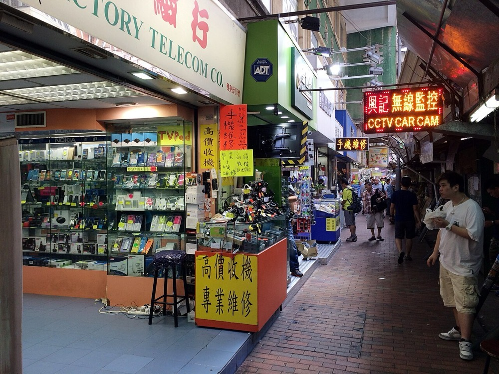
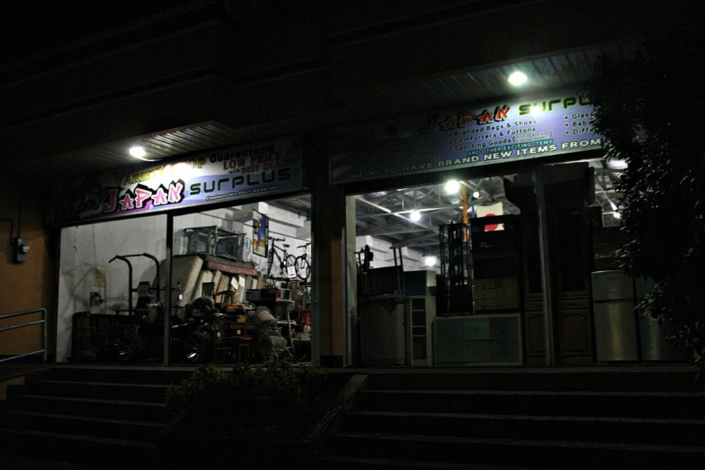

日本国内で仕入れた中古のブランド品と家電を、検品と等級付けを行ったうえで東南アジア・中東・香港の業者に卸す。買い手の業者からは代金を前払いで受け取り、入金後に出荷する。仕入れは国内の業者オークションに加え、廃業する小規模リユース店の在庫と法人の放出品から行う。
環境省の推計では、2024年の国内リユース市場は一般消費者の最終需要ベースで3兆4,986億円である。自動車が1兆9,213億円、自動車以外が1兆5,772億円を占める1。政府は2030年の目標を4兆6千億円とする案を示している1。リユース経済新聞社の推計は2024年に3.3兆円、2030年に4兆円規模である2。
リユース業251社の直近決算の売上高合計は5,775億4,600万円で、前期比11.2%増である3。
貿易統計では新品と中古品が同じ品目番号で扱われ、区別されない4。このため中古品の輸出額の全体は確認できなかった。品目番号が中古品に限られる古着は、2023年の輸出が約1億ドルで、マレーシア向けが52%を占める5。
推計 越境の卸の市場 ＝ 自動車以外のリユース市場1兆5,772億円 × 海外の業者に流れる比率
比率を10〜20%と仮定すると、約1,580億〜3,150億円となる。比率は本ページの仮定値である。参考として、大手のバリュエンスは2025年8月期の売上高848億円のうち21.4%、約182億円が海外売上である6。消費者の最終需要ベースの数値に比率を掛けているため、卸の取引額とは一致しない。
中古ブランド品の世界市場を一次情報で確認できなかった。大手2社は香港・シンガポール・タイ・マレーシア・中国・ドバイ・米国・欧州に拠点を置いており67、日本の中古品の買い手は東アジア・東南アジア・中東に広がっている。

| 年 | 変化 | 数値 |
|---|---|---|
| 2024年 | 国内リユース市場 | 3兆4,986億円、2021年比2.8%増1 |
| 2024年末 | 古物営業の許可件数 | 約57万2,000件、前年比8.1%増3 |
| 2025年4月 | 米国の関税措置 | 大手の業者オークションで、海外の取引先の参加見送りと購買意欲の鈍化が生じた6 |
| 2025年 | リユース業の休廃業・解散 | 122件、前年比29.7%増で10年間で最多3 |
| 2025年8月期 | 大手の委託型オークション | 委託落札額208億9,400万円、前期比36.8%増6 |
| 2025年11月 | 大手が越境ECサイトを開設した | 海外の買い手に直接販売する経路を加えた6 |
小規模事業者の休廃業が増え、在庫を一括で売却したい事業者が増えている3。一方で大手は海外の買い手を自社の業者オークションに集め、委託型の取引を伸ばしている6。中堅以下の事業者は海外の買い手と直接の取引経路を持たず、国内のオークションに出品するしかない。この層の在庫を海外の業者に直接卸す余地がある。
| 事業者 | 売上高 | 海外の動き |
|---|---|---|
| コメ兵ホールディングス | 2,217億円 2026年3月期 | タイ・マレーシア・シンガポール・香港・中国に出店している7。法人向け販売が売上の60.8%を占めた月がある8。海外売上の金額は確認できなかった |
| セカンドストリート | 1,161億8,400万円 | リユース業の売上高1位3。海外売上は確認できなかった |
| バリュエンスホールディングス | 848億4,100万円 2025年8月期 | 海外売上比率21.4%。14か国に49の買取店舗を持ち、2030年8月期に海外150店舗を計画する6 |
| シュッピン | 526億5,800万円 | 海外売上は確認できなかった3 |
営業利益率は、コメ兵ホールディングスが2026年3月期に約4.2%である7。バリュエンスは2025年8月期に営業利益14億5,300万円で、約1.7%である6。卸の利益率は小売より低い。
首位の条件 越境卸で首位になるには、大手の海外売上約182億円を上回る規模が必要である。条件は3つである。①中堅以下のリユース店と廃業する店から、大手の買取網と異なる経路で在庫を継続して仕入れること。②真贋と状態の等級を統一し、海外の業者が現物を見ずに購入できる水準にすること。③代金の前払いを取引条件とし、在庫を持つ期間を2週間以内にすること。
ブランド品の時計とバッグに限って始める。家電は単価が低く、輸出先の規制が国ごとに異なるため、2年目以降に検証する。
| 用途 | 金額 | 検証すること |
|---|---|---|
| 仕入れの運転資金 | 2,000万円 | 在庫を月2回転させ、年間約4.8億円の取引を賄えるか |
| 人件費 鑑定担当2名、海外営業1名 | 1,200万円 | 真贋の誤りがゼロで運営できるか |
| 古物営業の許可、撮影設備、在庫管理システム | 300万円 | 1点当たりの検品時間 |
| 海外の業者展示会と出張 | 300万円 | 前払いに応じる海外の業者を何社得られるか |
| 予備費 | 200万円 | |
| 合計 | 4,000万円 |
| 月 | 計画 |
|---|---|
| 1〜3月目 | 古物営業の許可を取得する。国内の業者オークションで仕入れ、香港とシンガポールの業者10社に試験的に卸す |
| 4〜6月目 | 廃業予定のリユース店と質店に在庫の一括買取を提案する。法人の放出品の仕入れ先を3社確保する |
| 7〜9月目 | 前払いで取引する海外の業者を30社に広げる。タイとマレーシアの業者を加える |
| 10〜12月目 | 粗利率と在庫日数を測定し、2年目の仕入れの運転資金を地銀と協議する |
1年目の判定基準は3つである。粗利率10%以上、平均在庫日数15日以内、真贋の誤りゼロである。
| 段階 | 資金 | 金融機関 | 条件 |
|---|---|---|---|
| 1年目 | 創業融資、買い手の前払い | 日本政策金融公庫 国民生活事業 | 仕入れの運転資金に充てる |
| 2〜4年目 | 在庫を担保とする融資、当座貸越 | 地銀、ノンバンク | 在庫の換金性が高く、担保評価を得やすい |
| 3年目以降 | 貿易金融 | メガバンク | 海外の業者への掛け売りを始める場合に限る |
| 買収 | 買収融資 | 地銀、商工中金 | 中堅のリユース店を取得し、仕入れの店舗網を得る |
買い手の前払いで現金は先に入るが、仕入れの代金はそれより前に支払う。資金源の型をAとするには、売り手から預かった品を海外の業者に落札させる委託型の取引に移る必要がある。大手も委託落札額の比率を2025年8月期に38.3%まで上げている6。
| 年目 | 1 | 2 | 3 | 5 | 7 | 10 |
|---|---|---|---|---|---|---|
| 売上高 億円 | 2 | 6 | 15 | 60 | 180 | 500 |
| 営業利益 億円 | 0.02 | 0.1 | 0.3 | 1.5 | 5 | 15 |
| 累計投資 億円 | 0.4 | 1 | 2.5 | 8 | 20 | 50 |
| 借入残高 億円 | 0.3 | 0.8 | 2 | 6 | 15 | 35 |
| 年目 | 1 | 2 | 3 | 5 | 7 | 10 |
|---|---|---|---|---|---|---|
| 売上高 億円 | 1 | 2.5 | 5 | 15 | 35 | 80 |
| 営業利益 億円 | 0 | 0.03 | 0.1 | 0.3 | 0.8 | 2 |
| 累計投資 億円 | 0.4 | 0.6 | 1.2 | 3 | 6 | 12 |
| 借入残高 億円 | 0.2 | 0.4 | 0.8 | 2 | 4 | 8 |
前提
楽観の10年目で売上高は500億円で、目安の1,000億円の半分である。営業利益は15億円に留まり、薄い利益率のまま取引額を増やす事業である。
首位を狙う領域は、日本発の中古ブランド品の越境卸に限る。推計市場は約1,580億〜3,150億円で、1,000億円以上の条件を満たす可能性がある。ただし推計の比率は仮定である。
楽観では7年目に売上180億円となり、大手の現在の海外売上約182億円6に並ぶ。大手は2030年8月期に海外150店舗を計画しており6、7年目にはさらに先にいる。首位に届くのは、楽観の10年目に大手の海外売上が300億円前後に留まる場合に限られる。保守の10年目80億円では届かない。停止する位置は3年目前後で、仕入れを国内の業者オークションに頼る限り、粗利率が大手との価格競争で失われる。
| 順 | 国・地域 | 理由 |
|---|---|---|
| 1 | 香港、シンガポール | 中古ブランド品の業者が集まる。大手2社も拠点を置く67 |
| 2 | タイ、マレーシア | 大手が小売店を出している7。古着の最大の輸出先はマレーシアである5 |
| 3 | アラブ首長国連邦 | 大手がドバイに子会社を置く6。中東の買い手に届く経路になる |
買い手の国を増やしても、商品の供給源は日本に限られる。日本の中古品の等級と真贋の基準を海外の業者が共通に使う状態になれば、取引の基盤として各国の業者を束ねられる。

| # | 基準 | 判定 | 根拠 |
|---|---|---|---|
| 1 | 50年、魂を燃やし続けられるか | 創業者が判定 | |
| 2 | 10年以内に、国内市場規模1,000億円以上の市場でシェア1位になれるか | △ | 越境卸の市場は推計1,580億〜3,150億円だが比率は仮定で、大手の海外売上約182億円を超えるのは楽観でも7年目以降である |
| 3 | 4,000万円で始められ、融資で伸ばせるか | ○ | 設備が小さく、在庫は換金性が高いため担保融資を得やすい |
| 4 | グローバルなインフラになり得るか | △ | 買い手は東アジアから中東まで広がるが、供給源は日本に限られる |
| 5 | 営業力が最初の売上に直接結びつくか | ○ | 法人の放出品と廃業店の在庫の仕入れには、法人営業が直接結びつく。海外の業者への販売は価格で決まる |
| 6 | 同じビジョンを共有する仲間を誘える事業か | 創業者が判定 | |
| 7 | 本業が早く現金を生み、返済と出資の原資になるか | △ | 1年目から取引の現金は動くが、営業利益率は1〜3%で出資の原資は小さい |
| 8 | 投資先を束ねる群の中核になれるか | ○ | 鑑定・修理・リユース店・海外小売の各事業が同じ在庫を共通の対象にできる |
| 9 | 成長の資金源がA・B・Cのどれに当たるか | A | 買い手の前払いと委託型の取引で現金が先に入る。仕入れ店舗網の拡大ではCを併用する |
1. 偽物の販売 1件の偽物の販売で海外の業者との取引が停止する。対策は鑑定担当の二重検品と、鑑定の記録を商品ごとに保存することである。精巧な偽物を完全に排除することはできず、返金と保険で損失を限定する。
2. 為替 日本の中古品が海外で安く見える条件は円安に依存する。円高に転じると海外の業者の購買が減る。為替予約で仕入れから販売までの期間の変動は抑えられるが、為替水準そのものは潰せない。
3. 輸出先の通商政策 2025年4月の米国の関税措置では、大手の業者オークションで海外の取引先の参加見送りが生じた6。対策は買い手の国を5か国以上に分散することである。中古家電は輸出先ごとに輸入の規制と中古品の判断基準があり、規制の変更は潰せない。
4. 仕入れの競争 大手は国内に買取店舗網を持ち、海外の買い手を自社のオークションに集めている6。中堅以下の店からの仕入れでも、大手が手数料を下げれば競争になる。対策は廃業店の在庫一括買取と法人の放出品という、店舗の買取と異なる経路に集中することである。